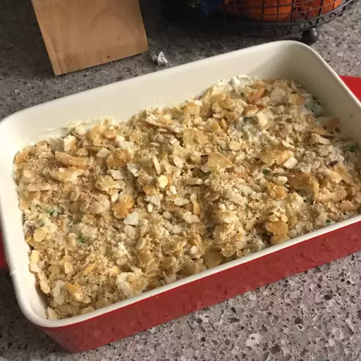

Thai Coconut Soup

Easy Chicken Casserole
- 4 skinless, boneless chicken breast halves
- 1 (10.5 ounce) can condensed cream of chicken soup
- 1 cup sour cream
- ¼ cup chopped onion (Optional)
- ¼ cup chopped mushrooms (Optional)
- 32 buttery round crackers, crumbled
- Preheat the oven to 350 degrees F (175 degrees C).
- Fill a large pot with water; bring to a boil. Cook chicken in boiling water until no longer pink inside, 20 to 30 minutes. Chop chicken into bite-sized pieces and place in a 9x13-inch baking dish.
- Combine condensed soup, sour cream, onion, and mushrooms in a bowl. Pour mixture over chicken and top with crumbled crackers.
- Cover and bake in the preheated oven until top is lightly browned, about 30 minutes.